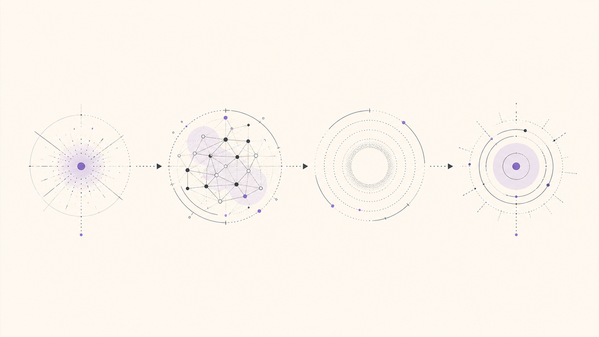

Inteligencia Artificial aplicada al trabajo
Deslizar
La IA está dejando de ser una herramienta.
Cambio de paradigma
Interacción actual
Cómo usamos la IA hoy

- 01 Objetivo Enviamos
- 02 Agente Trabaja
- 03 Espera Minutos u horas
- 04 Respuesta Recibimos
Se está convirtiendo en una compañera de trabajo.
Cambio de paradigma
En los próximos años la IA será quien ejecute gran parte del trabajo.
Cambio de paradigma
Todo está cambiando.
Señales del presente
Todo está cambiando.
OpenClaw founder joins OpenAI; open-source bot becomes a foundation
Hermes Agent: an autonomous agent that lives on your server and gets more capable as it runs
Señales del presente
Todo está cambiando.
OpenClaw founder joins OpenAI; open-source bot becomes a foundation
Hermes Agent: an autonomous agent that lives on your server and gets more capable as it runs
The Future of AI at Work: Introducing Cowork
Señales del presente
Todo está cambiando.
OpenClaw founder joins OpenAI; open-source bot becomes a foundation
Hermes Agent: an autonomous agent that lives on your server and gets more capable as it runs
The Future of AI at Work: Introducing Cowork
Enabling Claude Code to work more autonomously
Señales del presente
Todo está cambiando.
OpenClaw founder joins OpenAI; open-source bot becomes a foundation
Hermes Agent: an autonomous agent that lives on your server and gets more capable as it runs
The Future of AI at Work: Introducing Cowork
Enabling Claude Code to work more autonomously
ChatGPT is now a partner for your most ambitious work
Señales del presente
Todo está cambiando.
OpenClaw founder joins OpenAI; open-source bot becomes a foundation
Hermes Agent: an autonomous agent that lives on your server and gets more capable as it runs
The Future of AI at Work: Introducing Cowork
Enabling Claude Code to work more autonomously
ChatGPT is now a partner for your most ambitious work
Introducing the Codex app: a command center for agents
Señales del presente
Todo está cambiando.
OpenClaw founder joins OpenAI; open-source bot becomes a foundation
Hermes Agent: an autonomous agent that lives on your server and gets more capable as it runs
The Future of AI at Work: Introducing Cowork
Enabling Claude Code to work more autonomously
ChatGPT is now a partner for your most ambitious work
Introducing the Codex app: a command center for agents
The open-source app people use to manage AI agents for work
Señales del presente
Todo está cambiando.
OpenClaw founder joins OpenAI; open-source bot becomes a foundation
Hermes Agent: an autonomous agent that lives on your server and gets more capable as it runs
The Future of AI at Work: Introducing Cowork
Enabling Claude Code to work more autonomously
ChatGPT is now a partner for your most ambitious work
Introducing the Codex app: a command center for agents
The open-source app people use to manage AI agents for work
From MCP to multi-agents: the top new open source AI projects
Señales del presente
Todo está cambiando.
OpenClaw founder joins OpenAI; open-source bot becomes a foundation
Hermes Agent: an autonomous agent that lives on your server and gets more capable as it runs
The Future of AI at Work: Introducing Cowork
Enabling Claude Code to work more autonomously
ChatGPT is now a partner for your most ambitious work
Introducing the Codex app: a command center for agents
The open-source app people use to manage AI agents for work
From MCP to multi-agents: the top new open source AI projects
40% of enterprise apps will feature task-specific AI agents by 2026
Señales del presente
Todo está cambiando.
El fundador de OpenClaw se une a OpenAI; el bot de código abierto pasa a ser una fundación
Hermes Agent: un agente autónomo que vive en tu servidor y mejora mientras funciona
El futuro de la IA en el trabajo: presentamos Cowork
Claude Code ahora puede trabajar de forma más autónoma
ChatGPT ahora es un socio para tu trabajo más ambicioso
Presentamos la app de Codex: un centro de mando para agentes
La aplicación de código abierto para gestionar agentes de IA en el trabajo
De MCP a multiagentes: los nuevos proyectos de IA de código abierto más destacados
El 40% de las aplicaciones empresariales incorporará agentes de IA específicos para tareas en 2026
El agente de ChatGPT conecta investigación y acción usando su propia computadora
GPT-5.6 combina inteligencia de frontera con una eficiencia de razonamiento sin precedentes
Los agentes transforman el trabajo: de respuestas breves a tareas delegadas de larga duración
Señales del presente 00 / 12
!
¡Calma!
Demos un paso atrás.
¿Cómo llegamos hasta aquí?
El origen
Lanzamiento público
El punto de partida
ChatGPT
Una experiencia conversacional basada en un modelo de la serie GPT-3.5.
Fuente: OpenAI, 2022
La interfaz que lo cambió todo
Una máquina con la que podíamos conversar.
Preguntar
Responder
Repreguntar
Continuar
El diálogo permitía mantener el contexto y construir sobre cada respuesta.
Los modos de utilizar IA
Primero, conversamos.
- 01 Conversacional Preguntar y responder
- 02Por revelar
- 03Por revelar
- 04Por revelar
La pregunta inevitable
¿Puede esta IA ejecutar una actividad?
Hablar
Actuar
El siguiente salto
Los modelos empiezan a razonar y a utilizar herramientas.
- 01Buscarinformación
- 02Crearcódigo
- 03Operarsistemas
- 04Usartools propias
La relación cambia
Ya no solo conversamos.
Empezamos a delegar tareas.
02
Los modos de utilizar IA
Después, delegamos.
- 01 Conversacional Preguntar y responder
- 02 Delegada Entregar una tarea
- 03Por revelar
- 04Por revelar